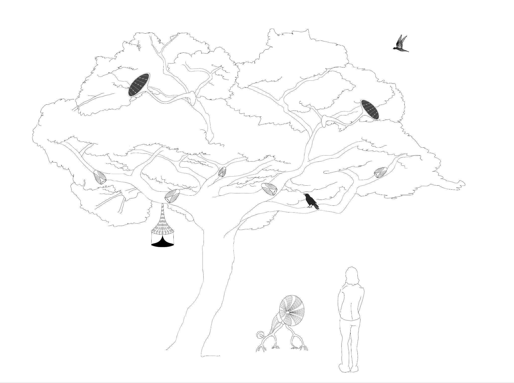
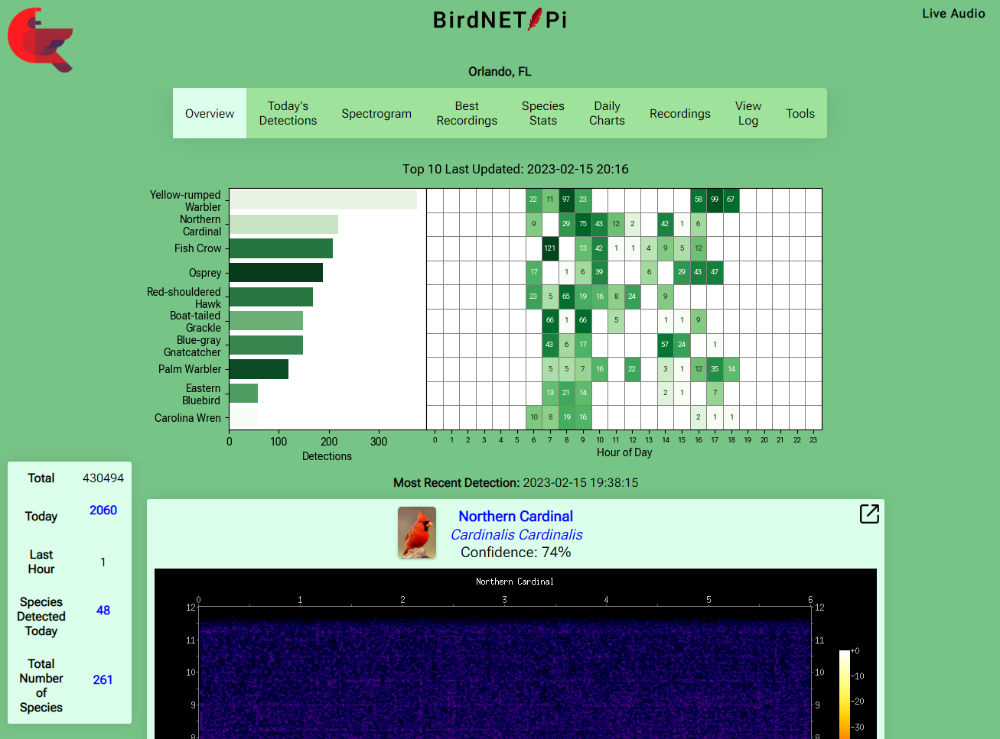
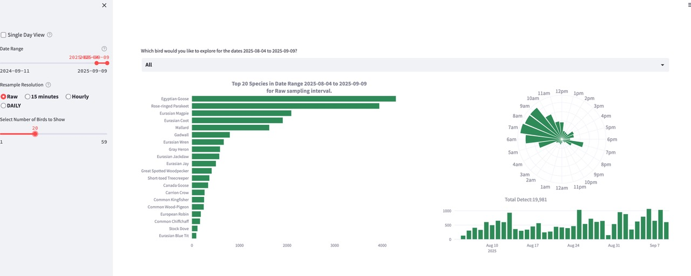
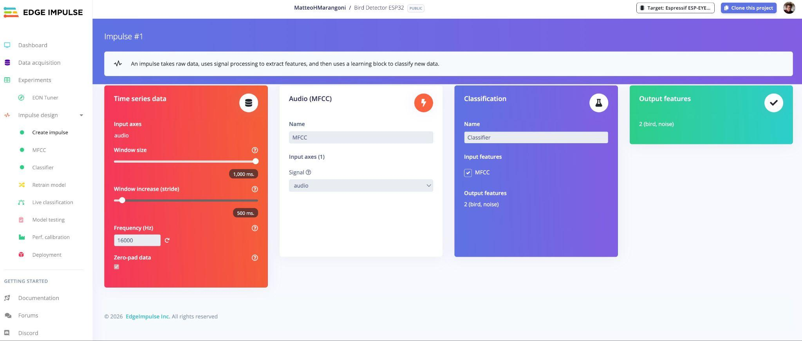
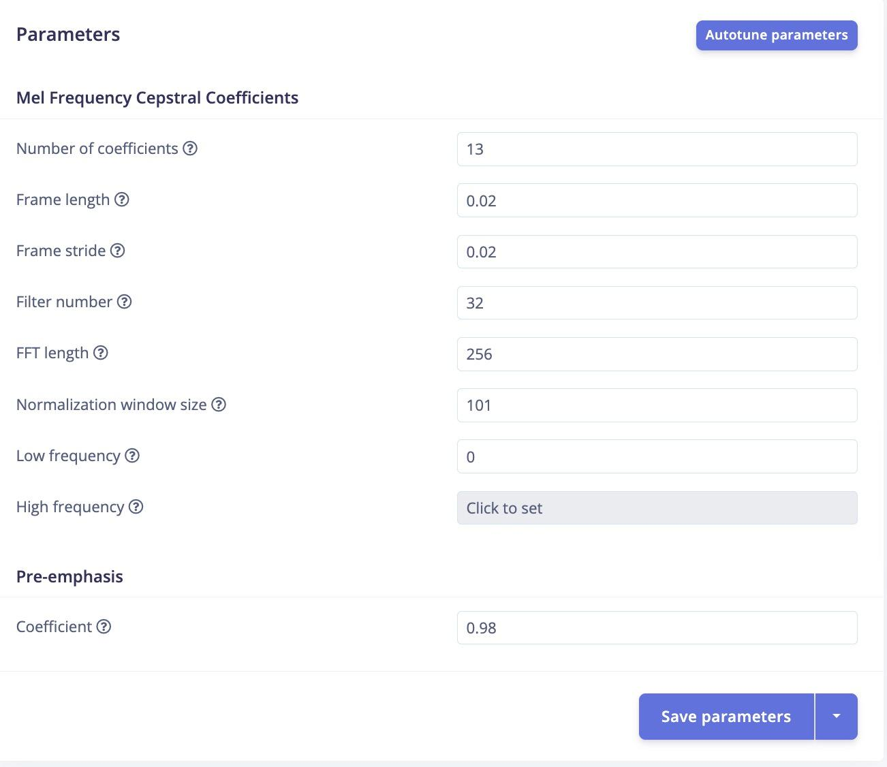
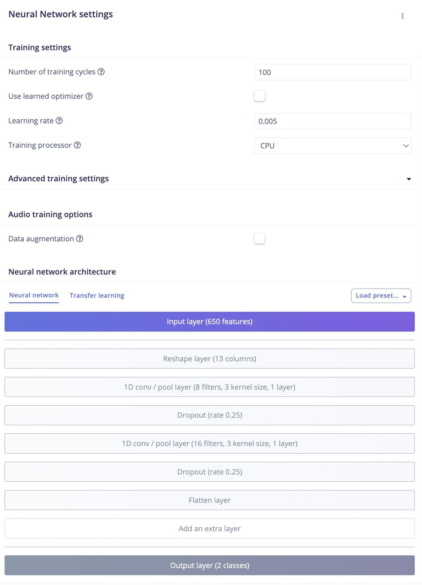
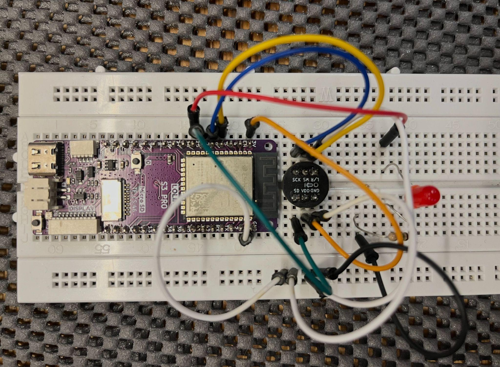

This is a complete guide to make a bird detector which runs entirely on a low power esp32 microcontroller programmed with Arduino code. It aims to make bioacoustic monitoring and embedded audio recognition more accessible within creative coding and artscience communities.
The bird detector described in this guide consists of a microcontroller which analyses a continuous audio stream from a microphone and attempts to determine if a bird is vocalising in the surrounding environment.
The bird detector is based on an embedded audio classifier which is optimised to run on a low power microcontroller. The classifier is trained on a custom dataset of bird vocalisations and environmental sounds collected locally at the target deployment sites. The classifier is trained and deployed using the Edge Impulse platform.
This guide presents a full pipeline, which is split in the following sections:
Data collection concerns recording a custom database of sound samples that is used to train the audio classifier. A large number of samples is needed for each target category. In our case we will work with two categories: bird audio and non-bird audio. The audio is recorded in the field at the same location, under similar conditions and with similar instruments as during deployment. Data is gathered continuously over time periods of multiple weeks using a Raspberry Pi running BirdNET-Pi and a custom script to supplement the bird audio dataset with non-bird audio.
Data preparation in this guide concerns preparing the data locally before it is uploaded to Edge Impulse using custom python scripts. The data is sorted, screened, segmented and reformatted in order to match the parameters of the audio classifier.
Model training is performed using Edge Impulse platform. MFCCs are extracted from the audio and used to train a lightweight neural network which performs the classification.
For deployment Edge Impulse provides the audio classifier as an Arduino library. This guide provides hardware schematics and code to feed the classifier with a microphone signal. Two options are provided for the microphone. The first option is a common MEMS microphone which is low cost and easy to connect to the microcontroller, but of limited quality and therefore detection accuracy. The second option is to fabricate custom electronics using a high sensitivity electret microphone in combination with a dedicated audio codec, which gives better results.

The bird detector described in this guide has been developed as part of the project Chorusing Symbionts. This project is a sound art installation designed for public parks and gardens. In this project a group of artificial creatures generate music in real time in response to each other and the environment. One of the project goals is to train artificial creatures to recognise when birds are vocalising in their surroundings, so that they can be programmed to respond through conflict avoidant behaviours.
For the realisation of this project is was necessary to develop an audio classifier with the following characteristics:
The classifier needs to run on an esp32 microcontroller using Arduino code, for integration with existing sound generation and behaviours developed in the previous project Komorebi
The classifier must have low power requirements, it needs to run on a small battery pack and a limited photovoltaic power source
The classifier needs to be low latency, to enable real time musical responses
The classifier needs to recognise the majority of birds present at the specific site where the artwork will be exhibited
At the time of development (2023-2026), there was no existing off the shelf solution to meet these requirements.
Disclaimer: at the time of development of this project (2023-2026) the field of embedded machine learning and bioacoustic monitoring is evolving rapidly, therefore the information in this guide might be outdated.
A commonly used classifier is BirdNET. This classifier is trained to recognise over 6000 individual species, which is beyond the requirements of this project.
However BirdNET currently does not provide a model that is able to run on a microcontroller. Edge devices based on low power microcontrollers such as an ESP32 are more commonly used to collect data locally, which is then sent for analysis to a more powerful remote server. This approach is ruled out by the project requirements, since computation needs to be entirely on board.
An embedded version of BirdNET is still in early development and not useful yet for the current application. BirdNET-PI is as close as a currently available solution comes, but it requires a Raspberry Pi, which in terms of energy budget and purchase cost is an order of magnitude higher compared to the ESP32.
Additionally, BirdNET works with 3 second chunks, which introduces an amount of latency which is not desirable for a musical application.
Several research papers, such as Tiny Chirp or the BioDCASE 2025 challenge 3 results, present low power and low latency bird audio classifiers with technical specifications compatible with project requirements, but these typically focus on recognising a single bird species. A further challenge is that these scientific papers do not provide accessible instructions suitable for replication in the DIY community. Furthermore they focus on the training of the classifier, without covering aspects related to data collection or model deployment which are covered in this guide.
Github link https://github.com/MatteoHMarangoni/bird_detector_esp32
Edge Impulse project https://studio.edgeimpulse.com/public/806211/live
Here are listed hardware and software used for each of the pipeline sections.
Raspberry Pi 4B + SD card, recommended 64GB or more, and a suitable power supply
Clippy EM272Z1 Mono Microphone + wind jammer
Rode AI Micro audio interface
BirdNET-Pi installed on the Raspberry Pi
BirdNET Analyser + dependencies
Silero VAD for removal of human speech for privacy protection
Dependencies for running the data preparation scripts: - python = "^3.11" - numpy = "^2.2.6" - scipy = "^1.15.3" - soundfile = "^0.13.1" - sounddevice = "^0.5.2" - librosa = "^0.11.0" - python-osc = "^1.9.3" - tqdm = "^4.67.1" - torch
Edge Impulse free account is sufficient
ESP32 S3 PRO as microcontroller (other ESP32 boards should also work, but might require some adjustments to the code and hardware interfacing).
INMP441 MEMS microphone breakout board
This microphone can be connected to the MCU simply with a breadboard and a few jumper wires
We have made our own board using the ES8388 Codec and a CMC-4015-25T electret microphone. In the repo you can find the schematic.
PlatformIO in Visual Studio Code for code editing and firmware flashing, with “Espressif 32” platform and “WEMOS LOLIN S3 PRO” board installed.
Dependencies to run deployment evaluation scripts - pyserial==3.5 - pygame==2.5.2
To train an audio classifier we need to first collect a large amount of examples for the target categories. During a residency at TU Eindhoven the advice was received to use own custom data, at least 5000 samples per target category, captured at the same location and with the same type of equipment as during deployment.
Although our objective is to detect birds, we also need to train our classifier on all kinds of other sounds that might be audible at the site, so that the classifier will be able to distinguish between birds and non-birds. Therefore in our case we have two target categories, bird and non-bird. Non-bird audio is also referred to here as noise.
Given the amount of data and the need to create multiple sets and classifiers for multiple exhibition sites, a semi-automated pipeline was developed to collect data on site. BirdNET-Pi is used to automatically sample and label bird audio data, while a custom script samples at regular intervals environmental audio data for the noise category when birds are not detected.
A Raspberry Pi 4B with a SD card and a suitable power supply is connected to a Rode AI Micro audio interface which receives a signal from a Clippy EM272Z1 Mono Microphone protected by a wind jammer. A network cable is used to connect the Raspberry Pi to a laptop to access it remotely via ssh in terminal and FTP via an FTP client.
Follow the instructions on:
https://github.com/mcguirepr89/BirdNET-Pi/wiki/Installation-Guide

Important: remember to install the correct OS as indicated by BirdnetPi, the latest version might not be compatible
Once you have BirdNET-Pi installed, connect to it via network cable and log in via the web interface accessible from a web browser at http://birdnetpi.local/.
Under tools: settings, set the date and time, local coordinates and preferred confidence settings for the detections. Check that the microphone is working well using the real time audio monitoring feature under “Live Audio” in the top right corner. Verify that detections are being reported correctly by playing a few labelled samples of bird vocalisations.
In the repo under “data_collection_script” you can find custom_script_birdnet_pi.py
This script runs in parallel to birdNET and saves samples of environmental sound when there are no bird detections, in addition to saving bird samples when there are detections.
You can access the data on the Raspberry-Pi via FTP by connecting to it via network cable and using an FTP client like Cyberduck. You can find the local network address of the Raspberry-Pi via Birdnet-Pi’s web interface under tools: system info: viewer: LAN IP.
Copy the script to your Raspberry-Pi, placing it in the folder BirdNET-Pi/scripts.
Then set the script to run on boot.
Important: in the script you need to adjust lines 695 and 696 to match the folder structure on your own Raspberry Pi.
You might also like to adjust values in lines 702 “non bird interval” (how often to save a sample), 703 “non bird record duration” (the length of the samples) and 704 “non bird volume threshold” (the minimum loudness threshold) depending on the environmental noise level, the rate at which the non-bird data is being sampled, how much data is needed etc.
The script will save bird and non-bird data in the folder Birds: StreamedAudio. Check that you are collecting samples at a sufficient rate, that the audio quality is sufficient and that they are being classified correctly.
4-8 weeks of continuous operation should be sufficient to collect enough raw data for one target location. This will vary by season and location, depending on the density of bird populations and how frequently they vocalise. The SD card should be checked every few weeks in case it is getting full, or just use a larger card such as 256 GB, when regular checks are not convenient.
The data collection setup needs mains power and is not waterproof, therefore it needs to be placed in a covered area with access to power. The microphone needs to be outside where it can capture bird vocalisations. We have setup our RPI indoors with the microphone exiting an opening in a window or wall and hanging under the eaves, or hanging in a covered terrace. Note that the microphone cable is unshielded and prone to EM interference. Keep away from power lines, including the power supply of the Raspberry PI. This was not always possible during data collection, therefore in the published dataset electrical hum can is present.
If collecting data in public space, regulations for privacy need to be observed. This varies by country. It might be necessary to place a sign indicating that audio data is being captured. Recording time can limited to short samples. A filter to remove human speech from the data can also be used, birdNET-PI provides one which can be effective for eliminating human speech from bird data. This is not yet implemented in the custom script for non-bird data. It is important not to publish data that contains private speech.
The custom script saves the data in two folders: bird / nonbird, each used to train one category in the classifier
- bird files are 3 sec long, 48khz, with the name being the date, time and the predicted species, e.g: 2025-08-05-16/13/01_6.0_9.0_bird_Eurasian_Magpie.wav
- non-bird files are 15 sec long, 48khz, with the name being the date, time and then nonbird, e.g: 2025-08-05-13/54/54_nonbird.wav
This section describes how the collected data is processed locally before uploading it to the Edge Impulse platform. The purpose of the preparation is to curate a dataset with appropriate content, size and file format, in order to minimise training time while maximising model accuracy and latency.
Our output will be a collection of 1 sec mono samples for both birds and noise, filtered for quality and diversity and then downsampled to 16khz.
The 1 second duration was chosen to reduce detection latency, compared to the 3 seconds used by BirdNET. The sample rate of 16khz is the lowest sample rate which can accurately capture bird audio while remaining compatible with the sampling rate and computing power available on the ESP32.
Ideally we want a similar amount of bird and non-bird data.
The amount of data collected is too large to be manually reviewed and labelled, therefore we use automated scripts to process the data. This sorting needs to be based on an understanding of the characteristics of the data and the goals and limitations of the classifier. It is crucial therefore to manually review a representative portion of the raw data by monitoring it over a high quality audio monitoring system, such as professional speakers or headphones. Hi-fi devices will also work, but not laptop speakers.
For those coming to this field with experience in music production or sound engineering, and who are used to manually editing audio, this method of approaching sound as data to be processed in large batches through machine listening algorithms will be very different from the traditional approach of reviewing individual audio samples by ear.

When reviewing the raw data, we found several challenges, which have been addressed in the dataset preparation.
The raw data is not of sufficient quality, we need to filter out the lower quality data. This includes data that is incorrectly classified during collection, recordings that are too soft, or bird data where the signal to noise ratio is very poor.
Target sources are not represented in the proportions needed for training. Some sources are over-represented, others under-represented. This demonstrates the tendency of current machine learning systems to reinforce imbalances and biases present in the real world. A curated selection of the raw data is needed to have a better balance.
The format of the data is not the most suitable. While Edge Impulse can take care of the data formatting, including segmentation to 1 second and downsampling to 16kHz, it will process the data each single time a model is retrained, which is inefficient, therefore it is best to do it before uploading the data to the platform. Also leaving the segmentation to Edge Impulse will create the problem that many 1 segment chunks will then be mislabelled (see below).
The bird data includes a lot of silence, which are typical when short bird calls which can have a duration of tens of milliseconds, are contained within a 3 second sample. When segmenting the labelled bird data from 3 second samples to 1 second samples, a significant amount of samples are produced that contain no bird data. Therefore these 1 second samples need to be screened again with a classifier. Since Birdnet Analyser does not perform accurately on 1 second samples, we reduce the confidence threshold for this screening pass.
The data includes a lot of samples that are too soft, we can easily filter out samples by amplitude threshold.
The data includes bird samples in which the signal to noise ratio is very poor. For our application it is good to have a dataset in which bird audio is present in combination with environmental sounds, as this is representative of the actual microphone signal that will be fed to the classifier during deployment. We want the classifier to be able to detect birds vocalising at a distance while other environmental sounds (wind, traffic etc) are also present.. A high quality bird sample in sound engineering terms would require the bird to be close to the microphone in a silent environment, which would be a rare occurrence in real world applications. For this reason it is appropriate to keep data in which the signal to noise ratio (SNR) is poor, where bird audio is signal and other sounds are noise. However we keep SNR into account when selecting data for species that are overrepresented in the raw data.
The raw bird data is overrepresenting certain species and under-representing others. We rebalance this manually by selecting a target amount of 1800 1s samples for the 25 most common species detected at the location. When discarding redundant data we seek to discard lower quality samples (lower confidence, or lower amplitude), while preserving seasonal variations on sets spanning longer time periods. Bird songs vs calls incidence is affected by seasonality, but there is no automatic labelling of calls vs songs using Birdnet Analyser, so they need to be evaluated by ear. This is clear for example in the data collected for Robins, whose calls differ significantly from songs both in audio content and seasonal occurrence. For birds of which we lack sufficient data, we seek to include additional data from other locations. At this time a solution is not provided to obtain data for the less common species present at the target location.
Similarly, the raw noise data overrepresents certain sources (i.e. rain) and under-represents others (i.e. dogs barking). At this time we have not developed a solid method for balancing noise sources. Data was sorted heuristically, manually reviewing in time sequential order selected samples and discarding batches of data assumed to be redundant. For example, rain tends to dominate the dataset for several hours at a time, therefore a period in which rain is present can be manually filtered out by deleting batches of samples within the time period in which rain is recorded, without having to review each individual sample.
We use python scripts running within a virtual environment to automate the sorting and screening of the data.
Install Virtual Studio Code and the PlatformIO extension.
Download the project repository and open it in PlatformIO
https://github.com/MatteoHMarangoni/bird_detector_esp32
In terminal install python 3.11 with > brew install python@3.11
In VS code go to view: command palette: Python: Create Environment: Venv.
Select python 3.11.
Select to install the dependencies listed under “requirements.txt.
This will create a .venv folder in the project repo which should include all the dependencies. It can take a few minutes.
Open the terminal in PlatformIO (terminal button below code editor). This should activate the virtual environment automatically, Verify that the prompt starts with (.venv).
In PlatformIO file explorer within the project repo, in the folder dagaset_preparation_scripts you can now run python scripts by selecting them and clicking the “run python script” button above the code editor.
The scripts will process all data contained in the “dataset_preparation_scripts: data_raw” folder and output it in a new folder within “dataset_preparation_scripts”.
Focus on the most common species present at the planned exhibition location. We selected the 25 most represented species in the raw data. Goal: 30 minutes, or 1800 1sec chunks per bird species. At 16bit 48khz, this is 173mb of data. For 25 species we are aiming for approximately 4Gb of curated data.
Species in the published curated dataset set are:
The first thing we want to do is remove the silences from the 3sec bird samples, so we segment the files into 1 sec chunks and remove the ones that don't contain bird audio.
BirdNET Analyser doesn't work as well with 1 sec samples, so we have to lower the confidence level substantially so we don't discard too much useful bird data. The problem with this is that when we set a lower confidence threshold, species are more likely to be mislabelled. This is not a big problem as we are concerned with detecting birds generally and not the specific species, however the labelling needs to be taken into account when evaluating the target amount of recordings per species in the dataset. When segmenting the data, we can also choose to maintain the species label of the original detection present in the 3 second chunk, which is more likely to be accurate.
We first run the bird data through the script “screen_sort_bird.py”.
Don’t forget to change the longitude and latitude of the location you recorded the data in the script. This is used for accurate inference by BirdNet Analyser.
You could also raise min_conf to 0.2 if you have enough data (or even higher) so there is less low confidence data in the output (low confidence is a general indication of a bad quality recording, but not always)
Filenames of output from script:
(sorted into folders with the species name of ‘previous filename’)
Optionally pass the resulting data through the script “remove_birds_by_name.py”
This compares the two bird species inferences, the original one from
BirdNet during the data collection and the new bird species from the 1s
inference. If these two species are not the same, it will move the file
to a separate folder to discard it.
This is done because during testing it was found that if the species
don’t match, there is a high likelihood that the recording is of low
quality.
Review the output from this process
How much data do we have for each target species?
Here is a table for the bird data gathered for the project in 2025 at different locations (in mb).
| Bird | Zuiderpark | Marres | Bronkhorst | Amstelpark | Zuidwal | Combined |
|---|---|---|---|---|---|---|
| Common Chiffchaff | 30 | 32 | 805 | 3540 | - | 4407 |
| Egyptian Goose | 925 | - | - | - | - | 925 |
| Rose Ringed Parakeet | 810 | - | - | 20 | 26 | 856 |
| Common Chaffinch | - | 173.9 | 480.2 | 1.2 | 5.9 | 661.2 |
| Eurasian Blackbird | 1.9 | 193.4 | 81.3 | 347.4 | - | 624 |
| Eurasian Coot | 343 | - | 146 | 1 | 4 | 494 |
| Eurasian Magpie | 247 | 102.3 | 30 | 34 | 44 | 457.3 |
| Eurasian Wren | 134 | - | 125 | 171 | - | 430 |
| Eurasian Blackcap | - | 192.9 | 82.1 | 38.9 | - | 313.9 |
| Pigeon & Dove | 62 | 185.2 | 39 | 19 | - | 305.2 |
| European robin | 28 | 192.1 | 11 | 48 | 4 | 283.1 |
| Mallard | 219 | - | 26 | 1 | - | 246 |
| Eurasian Jackdaw | 79 | - | 41 | 6 | 102 | 228 |
| Great Spotted Woodpecker | 71 | 96.5 | 8.9 | 15.1 | - | 191.5 |
| Target amount | 173 | 173 | 173 | 173 | 173 | 173 |
| Carrion Crow | 56 | 11.6 | 8 | 78 | 1 | 154.6 |
| Short Toed Treecreeper | 59 | 7.9 | 20 | - | 3.2 | 90.1 |
| Eurasian Jay | 79 | - | 2 | - | - | 81 |
| Gadwall | 72 | - | - | 1 | - | 73 |
| Great Tit | 1.3 | 43.5 | 14.9 | 1.4 | 7.5 | 68.6 |
| Seagulls (combined) | 4.1 | - | - | 1 | 63 | 68.1 |
| Eurasian Green Woodpecker | 6.2 | 26.5 | 12.3 | 9 | - | 54 |
| Grey Heron | 47 | - | 2 | 4 | - | 53 |
| Common Kingfisher | 47 | - | 5 | - | - | 52 |
| Canada Goose | 43 | - | - | - | - | 43 |
| Eurasian Bluetit | 10 | - | 20 | 2 | 12 | 44 |
When we have more data than needed for the target location, we discard the lower quality data (lower confidence samples). If there are categories of birds that have too little data at the target location, we can look into other datasets from other locations and integrate bird data from those sets to compensate. For several common species which were observed at the target location, we chose to include the data although it was below the target amount.
- use downsample_dataset.py
Goal:
- purge bird audio from the non-bird data - discard very soft recordings - format for training to 1 second 16khz - extract a total of around 4 Gb (similar to total bird data),
To remove misclassified audio from this data run purge_birds_from_nonbirds.py
We run a script that does inference with a low confidence level (0.1 or lower, depending on the amount of non-bird data present), so it is aggressively filtering out anything that might be a bird.
Optionally: if there is too much noise data, filter by loudness threshold with split_by_loudness.py
Review a representative selection of the dataset, listen if there are still birds in there and if the non-bird data is useful.
If there is too much data, discard things like night recordings where nothing much is happening, or data categories that are too redundant (too much of the same, such as rain)
the goal is to have a sufficient amount of data for different noise categories, including:
Segment the 3s chunks into 1s chunks with split_into_1s_chunks.py
downsample from 48khz to 16khz with downsample_dataset.py
- if data is to be published: remove (most) intelligible human speech from data with remove_human_speech.py
Note: Review output and adjust settings if intelligible speech that could relate to identifiable individuals is present. Under Dutch law (AVG/GDPR), voice recordings may constitute personal data if a natural person can be identified. Incidental, non-identifiable background speech in public environments is generally low risk. However, sustained and intelligible conversations between individuals should be removed prior to publication. Speech delivered in a public performance or event may be less privacy-sensitive.
For training we use Edge Impulse, a platform focusing on Machine Learning in IoT applications.
Setup a free account on Edge Impulse and clone the project:
https://studio.edgeimpulse.com/public/806211/live
The platform provides a tutorial on training audio classifiers.
In data acquisition upload the two data folders as “birds” and as “noise”.
Let the data be split automatically in train and test set.
In create impulse select the parameters for the input data, feature extraction (MFCC) and learning block (classifier).

Then proceed to MFCC extraction

And finally model training

When working with a new dataset, it might be useful to use the provided Ion Tuner feature to sweep the parameter space and optimise setting for the ESP32 as target platform.
Note that accuracy and latency values reported on Edge Impulse are an estimation that does not correspond to what is measured in actual deployment.
Once the model is trained, in the deployment tab export the quantized model as an Arduino library.
You may also try the model in your phone’s browser before testing it on the ESP32.
To deploy the model the ESP32 needs to be interfaced with a microphone input. This repo provides the code and two hardware solutions.
We used an ESP32 S3 with 8MB psram, the Wemos Lolin S3 Pro provides a suitable development board.
The MEMS microphone INMP441
is a popular option in combination with the ESP32, and low-cost breakout
boards are easily obtainable.
However, we noticed that performance increased substantially when switching to a custom circuit using a dedicated codec (ES8388) together with an electret microphone (CMC-4015-25T).
We use the microphone and codec in full differential mode for the best signal-to-noise ratio.
See our electronic schematics here:
Custom
microphone schematic
When using the INMP441 breakout board, wire it as follows:
| INMP441 | LOLIN S3 PRO |
|---|---|
| VDD | 3V3 |
| GND | GND |
| SCK | GPIO6 (BCLK) |
| WS | GPIO5 (LRCLK) |
| SD | GPIO7 (DATA OUT) |
| L/R | GND (Left channel) |
You may connect an LED to indicate a positive detection: GPIO15 → LED → 100Ω resistor → GND

Depending on your hardware, download from the project repo the branch for the custom mic circuit or MEMS mic.
If you have not yet installed the VSC, PlatformIO and the virtual environment to run python scripts, first follow the instructions at Dataset Preparation: Setting up the virtual environment…
Open the project in PlatformIO in VSC.
In main.cpp, choose mode (uncomment one):
If set in classifier mode, simply upload to MCU and open the serial monitor to see the inferences, or simply observe the LED (light on signals bird detected).
If set in communication mode, run the script Serial_Audio.py
This script allows to:
To add a different model trained on Edge Impulse, unzip the file we got after building the model in edge impulse. The resulting folder we have to place in the “lib” folder in the project code.
In the main.cpp file in the project folder, we change the naming on
line 19:
#include <Bird_Detector_ESP32_inferencing.h> - Change the name of
the .h file to the exact name of the folder you just put in the lib
folder
Edge Impulse provides an estimation of accuracy by running inferences on the test set. Actual accuracy in the field will differ. The test set is split off from the same dataset as the training set. Differences in real life applications will emerge due to variations in sound sources, environmental conditions and hardware limitations.
The device reported the following latency:
Feature ext: 5.73 ms | Inference: 48.60 ms
Current draw was measured witha USB amp meter at approx 150mA @ 3.3 volt. for 1.05 seconds (including sampling time) = approx 0.044mAh per inference
To measure accuracy during deployment the following setup is arranged, which is intended to compare the effects of hardware (microphone inputs) on accuracy.
The bird detector running is placed is a quiet room and connected by USB serial to a computer, the computer’s audio output is connected to professional (or hi-fi) speaker system. The computer will play back samples from a test dataset over the speakers, the ESP32 will perform inferences over the sound captured by the microphone, the inferences can then be compared to the original label to determine accuracy.
With the firmware set to Communication Mode, we can use the Serial_Audio.py script to verify deployed inference accuracy.
We need to add the files we want to use for testing to the project folder. We do this in the “input” folder. In the folder there are two subfolders, bird and no_bird. We add bird recordings in the bird folder and non_bird / noise recordings in the no_bird folder. We aim for around 1h of total data (so 30 min for each category). We used a portion of the testing data downloaded from Edge Impulse (note this was already downsampled to 16khz, better would have been to use 48khz but since the training/test split was done automatically on the platform we wanted to avoid using training data - would have been better to split training and testing before downsampling and uploading to EI.
When running the script, in the terminal you will be presented with some options, selected by sending different letter keys. First choose your serial port.
Type ‘c’, to calibrate the offset between starting a sound file and playback. Sending the c will play a 1.5s 2khz frequency multiple times, with different offsets from starting the playback to starting the recording, selecting the offset with the best coverage.
After the offset is calibrated, we can type the letter ‘a’ to start the process. This will run the automatic evaluation script. It will cycle through the files in the input folder (remember to point the script to the test data). It will play a file from the input folder over your computer's speakers. While the computer is playing back the file, the MCU will make a recording using the onboard microphone, run an inference on it. Then it will save it in the recordings folder on the computer. Files from the bird input folder will be saved in the recordings/bird folder. The result of the inference will be written in the file name as bird or nonbird. Files from the no_bird folder will be saved in the recordings/no_bird folder with the same naming convention.
After the script has cycled through all the files we can compare the amount of correct inferences, by parsing files by name (bird/non-bird) in each of the folders. In the bird folder files named bird are correct inferences. In the non-bird folder files named non-bird are correct inferences.
We can also have a look at the confidence levels of the inference. 0.000 - 0.500 means it's classified to be a non_bird, while confidence 0.500 - 1.000 means it is classified as a bird. (So if a file from the non_bird input is classified as 0.511-bird, this means its not very confident about it) .
Measured deployment accuracy is 82% when using custom electronics for the microphone input and 64% when using a common MEMS microphone.
The project started in 2023 with the question: is it possible for an artificial creature based on a low power microcontroller to recognise bird sounds in the wild? This project shows that this is not only possible, but it can be done reliably and efficiently within the time and budgetary constraints of an individual art project.
Several aspects of the pipeline could be developed further:
This project was developed by Matteo Maragoni with support from the Chorusing Symbionts project team: - Ahnjili Zhuparris, project advisor for machine learning, development data collection script - Stephan Olde, IoT developer, development deployment code - Matthijs Munnik, custom electronics design - Niels Gräber, project intern, data preparation
The publication of this DIY Bird Detector is supported by V2, Rotterdam, Microdosing A.I. residency.
Chorusing Symbionts is produced in collaboration with:
Scientific advice:
Funding:
{kind=link}